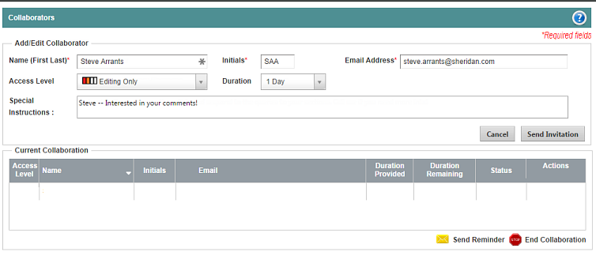

Procedures
Here are some rules of thumb for writing effective procedures.
- Each action is a numbered step. Results do not take a number as they are not a step.
- If there is only one step, use a bullet, and not the number 1.
- Use active voice. It is easier to understand.
- Use second person. You're talking to the user, so second person is best. You can even use the word You in your instructions (like I just did).
- Present tense, please. Most of the time (all of the time?) users read the instructions when they're in the middle of trying to do something or solve a problem.
- No more than 8 steps. If you require more, break the procedure up into a grouped set of procedures.
- Include images and videos if they help the user.
- Use sub-steps sparingly, and use bullets or a, b, c, etc., but be consistent!
Also, don't use Input to show typing information. Use Type instead.
Here is a sample procedure
To invite a collaborator:
- Click the Collaboration tab. ArticleExpress displays the
Collaborators form.

- Fill out the Add/Edit Collaborator section. ArticleExpress requires the name, initials, and email address.
- Change the Access Level and Duration, if desired.
- Add any message or special instructions to include in the email.
- Click Send Invitation. ArticleExpress sends the invitation to the collaborator.
{kind=link}